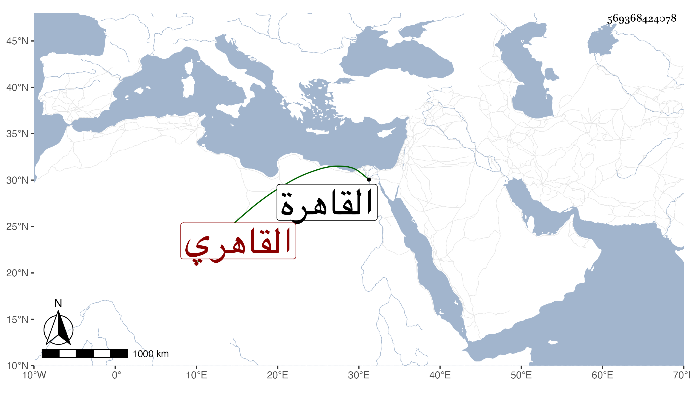

0902Sakhawi.DawLamic.ITO20230111-ara1.EIS1600.569368424078
Biography ID: 569368424078
1096
علي بن محمد الملقب سميط بن علي الملقب سبيع القاهري ويعرف بالحريري . ولد في سنة تسع وعشرين وثمانمائة بالقاهرة ونشأ بها فأخذ فيها عن الشهاب بن الغباري القزازي وبرع فيه وطوف وصار راجح الرجاح لقيته بأم دينار فكتبت عنه قوله :
| يا باعثا شعره انتظارا | لقامة ما لها نظير |
| الموت من ناظريك لكن | من شعرك البعث والنشور |
وغير ذلك وكان كثير المحفوظ سريع النظم مع ذوق وفهم وثقل سمع سامحه الله وإيانا .
